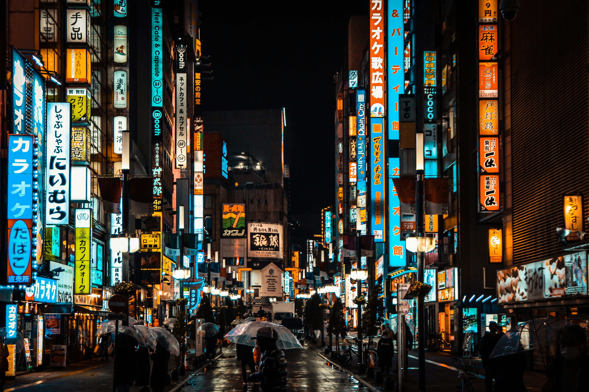
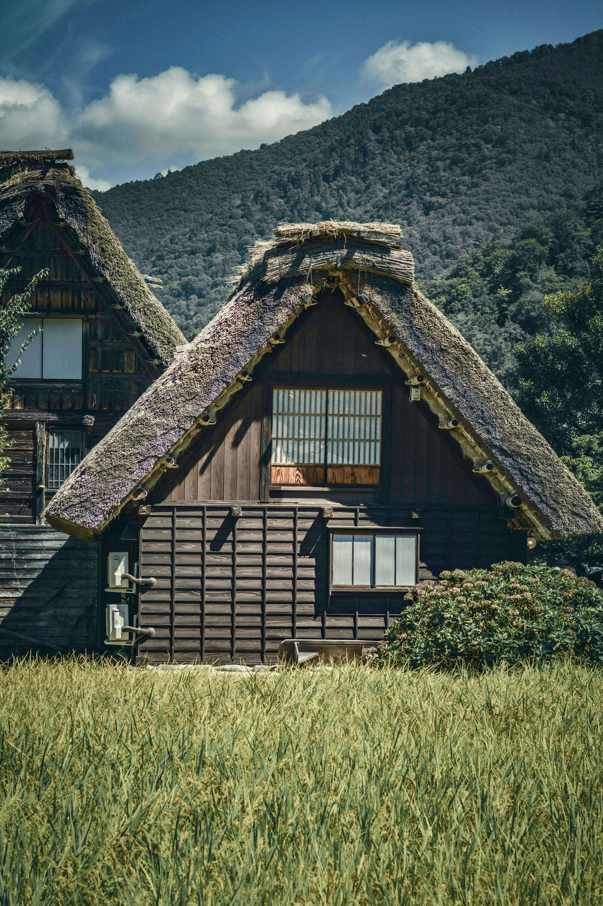
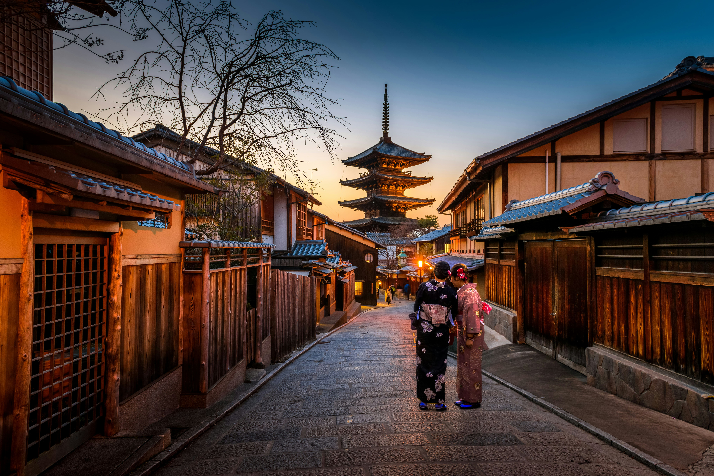
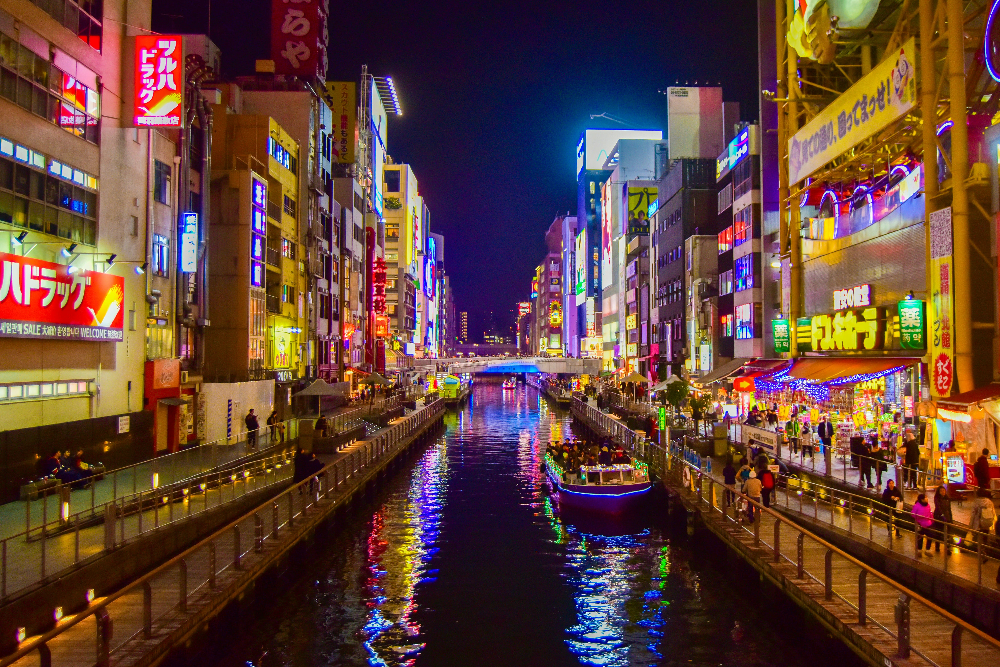

Il nostro viaggio di nozze in Giappone
Ecco il nostro itinerario di viaggio per una luna di miele indimenticabile in Giappone. Abbiamo scelto un mix di grandi classici, natura e tappe autentiche. Se vuoi, puoi scegliere un “regalo” legato a un’esperienza del viaggio per prendere parte al nostro sogno.
Giorno per giorno (apri e scorri)
Partiremo dall’Italia con volo intercontinentale verso il Giappone. Check-in e controlli, tempo per sistemarsi a bordo e iniziare a entrare nel mood del viaggio. Notte in volo, con arrivo il giorno successivo.
Finalmente arrivo a Tokyo e trasferimento in zona Asakusa. Dopo il deposito bagagli in hotel faremo una prima passeggiata tra vicoli e botteghe del quartiere storico: Tempio Sensō-ji, lanterne e atmosfera di Nakamise-dōri. Nel tardo pomeriggio ci concediamo i primi panorami sul Sumida e, se vi va, una prima serata più “wow” a Shibuya per vedere l’incrocio e le luci di Tokyo appena arrivati.
Giornata dedicata alla Tokyo più iconica: Shibuya (incrocio, Hachikō e vie principali), poi Harajuku con il contrasto tra street style e la quiete del Meiji Jingū nel verde. Nel pomeriggio ci sposteremo verso Shinjuku tra skyline, punti panoramici e quartieri pieni di vita; in serata sarà la stanchezza a decidere il ritmo: vicoli e lanterne tra izakaya oppure rientro tranquillo dopo la prima grande immersione urbana.
Escursione a Hakone: giornata tra montagne, valli vulcaniche e scorci sul Fuji (meteo permettendo). Salita verso Ōwakudani e giro panoramico tra punti vista e piccole soste fotografiche. Rientro a Tokyo nel tardo pomeriggio/sera, con possibilità di cena in zona hotel o in un quartiere scelto sul momento.
Escursione a Nikkō (UNESCO): complesso di santuari e templi immersi nella foresta, con un’atmosfera completamente diversa dalla metropoli. Visiteremo le aree principali, camminando tra ponti, portali e viali di cedri; se i tempi lo permettono, tappa anche per un punto naturale panoramico. Rientro a Tokyo in serata.
Tokyo più “di nicchia” e rilassata: tra giardini e santuari tranquilli come Nezu-jinja, stradine residenziali e piccole botteghe. Giornata ideale per alternare ritmi più soft a scorci autentici, con tempo per caffè, shopping mirato o musei (in base a vibes e meteo). Serata libera: si può rientrare presto o scegliere un quartiere più vivace.
Tokyo tra panorami e cultura pop: mattina con food-walk/mercato (es. area Tsukiji) e poi saliremo per un punto vista sulla città. Nel pomeriggio ci muoviamo tra quartieri più moderni, arcades, gacha e shopping a tema; chiuderemo la giornata con una zona serale piena di luci e insegne per foto memorabili.
Trasferimento verso Kawaguchi-ko (area Monte Fuji). Non appena arrivati ci concederemo una prima passeggiata sul lago per cercare i migliori scorci del Fuji, tra punti panoramici e angoli tranquilli. In base all’orario, tempo per sistemazione, relax e una serata più slow con cena e aria di montagna.
Giornata dedicata al Fuji: ci muoveremo tra punti panoramici e luoghi simbolo (es. Arakurayama Sengen / pagoda, o spot alternativi in base alle condizioni). Possibile passaggio in villaggi tradizionali e soste fotografiche lungo laghi e strade scenografiche. Rientro in serata con tempo per relax e immersione culinaria in izakaya locali.
Arriveremo a Kanazawa: primo assaggio di città tra Mercato Ōmichō (street food e colori), quartieri storici e artigianato locale. Passeggiata tra vie eleganti e atmosfere da “piccola Kyoto”, con tempo per visitare una zona samurai o geisha. Serata tranquilla in centro.
Kanazawa storica e raffinata: Kenroku-en (uno dei giardini più belli del Giappone) e dintorni, con passeggiate lente tra ponti, stagni e scorci perfetti per foto. Proseguiremo con una zona museale/artistica e un laboratorio o bottega di artigianato. Tempo libero per shopping e caffè prima della serata.
Trasferimento a Kyoto. Inizio con Nishiki Market (sapori e bancarelle) e passeggiata tra le vie centrali. Nel pomeriggio entriamo nella Kyoto più scenografica di Higashiyama, tra stradine in salita, templi e scorci tradizionali. In serata, atmosfera unica tra lanterne e vicoli di Gion (con rientro quando volete).
Kyoto classica: Castello Nijō (sale storiche e “pavimenti dell’usignolo”), poi uno dei grandi templi simbolo (in base alla giornata: Kinkaku-ji o alternative). Nel pomeriggio ci spostiamo verso aree più verdi o panoramiche e chiudiamo con tempo libero per shopping artigianale, dolci e souvenir. Serata a scelta tra centro e rientro relax.
Escursione sul Lago Biwa: treno per Hikone (castello originale e giardini) e passeggiata lungo l’acqua. Nel pomeriggio saliamo verso Monte Hiei / Ōtsu per viste ampie e un cambio di atmosfera più “montagna”. Rientro in serata a Kyoto, con cena libera.
Nara e Uji: passeggiata al Nara Park tra i cervi sacri e visita a un grande tempio storico. Dopo pranzo ci spostiamo a Uji, patria del tè verde: stradine sul fiume, botteghe e una pausa matcha in una tea house. In serata arrivo a Osaka/Nara (in base alla logistica prevista) e sistemazione.
Arrivo a Osaka: dopo check-in o deposito bagagli, prime tappe tra Osaka Castle (esterni/parco) e quartieri centrali. Nel tardo pomeriggio ci spostiamo verso Dōtonbori: insegne, canali, atmosfera vivacissima e foto sotto il Glico Man. Serata libera tra street food (o alternative) e rientro quando preferite.
Osaka urbana: tra Umeda (sky building/panorami) e zone commerciali, con tempo per shopping, arcades e quartieri come Shinsekai o Namba (a seconda del ritmo). Giornata flessibile: chi vuole può inserire musei o una pausa più lenta in caffè e parchi. Serata a scelta: divertimento in centro o rientro soft.
Giornata Hiroshima & Miyajima: treno veloce verso Hiroshima, visita al Peace Memorial Park e ai luoghi simbolo della città. Nel pomeriggio traghetto per Miyajima, con passeggiata tra il torii e le vie tradizionali dell’isola (meteo e maree permettendo). Rientro a Osaka in serata.
Escursione tra Himeji e Okayama: visita al magnifico Castello di Himeji (tra i più belli del Giappone) e passeggiata nei giardini. Proseguimento a Okayama per il giardino Kōraku-en (tra i più belli del Paese), con tempo per foto e relax. Rientro nel pomeriggio/sera.
Ultime ore in Giappone: dopo colazione trasferimento in aeroporto, procedure di rientro e volo verso l’Italia. Arrivo il giorno stesso, e il sogno diventa ricordo indelebile nella nostra mente e nel nostro cuore.
La nostra mappa di viaggio
Ecco la mappa del nostro itinerario.






Lista regali
Un contributo per una notte speciale lungo il viaggio.
Una serata tra sapori locali (Osaka / Tokyo).
Tatami, atmosfera e relax.
Matcha e rituali in stile Kyoto.
Una sera da ricordare.
Workshop / tradizioni (Kanazawa / Kyoto).
Un’escursione (Hakone / Nikkō) come regalo.
Vista / sorpresa / piccolo upgrade.
Fiducia allo chef.
Il momento wow del viaggio.
IT91S0200805321000107266136